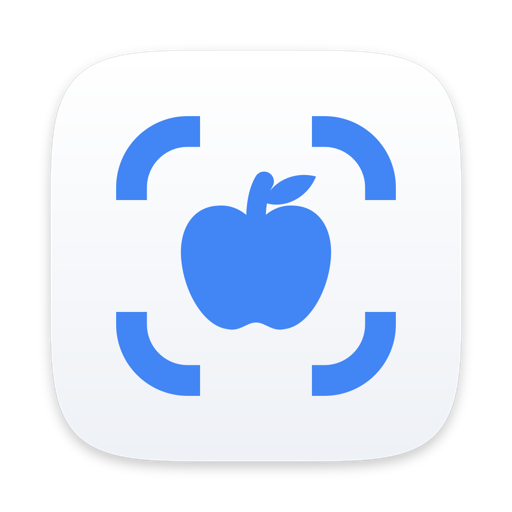
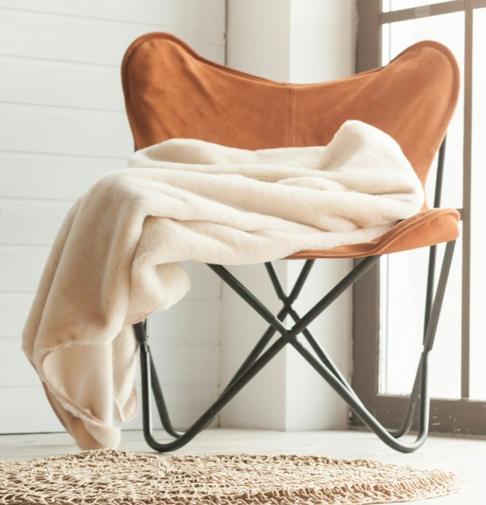

Pinch to zoom
Pinch or pan with two fingers to get close to small type before you circle it.

macOS LensPress ⌘⇧2 to freeze the screen. Circle anything to search it with Google Lens, or tap its words to copy, translate or hear them.
$ curl -fsSL https://raw.githubusercontent.com/SharonHart/macos-lens/main/scripts/install.sh | bash
Hollis Furniture
Butterfly chair, leather and steel
$189
A folding steel frame with a cognac leather sling. Ships flat in one box.
«Comodissima. La uso ogni sera sul balcone e si chiude in un attimo.»“Very comfortable. I use it every evening on the balcony, and it folds in a second.”Giulia, Bologna
Add to cartButterfly chairVisual matches
Visual matches
Recorded in the real app with a scripted pointer, on pages written for the demo.
A screen share, a paused video, a photo of a whiteboard. Tap a word or drag across a line, then Copy. The handles adjust the selection.
The translation covers the original in the same place, so a menu still reads like a menu. It runs on the Mac once the language pair is downloaded. Show original flips it back.
Select a paragraph and choose Listen. Your Mac reads it aloud in its own voice. Try it here: your browser's voice reads the paragraph.
Juniper Lane library opens late on Thursdays
By Ana Ruiz · 4 min read
From next week the library stays open until 9 pm on Thursdays. The reading room gets twelve new desks, and the children's corner moves downstairs, next to the garden door.
Volunteers can sign up at the front desk.
Email addresses, phone numbers, street addresses, links, tracking numbers and dates get the action that fits: write, call, open Maps, open the page, track the parcel, add to the calendar.
Your butterfly chair is on its way
Questions? Call +1 415 555 0142 or write to help@hollis.example. Your order is also at hollis.example/orders.
Pinch or pan with two fingers to get close to small type before you circle it.
Drag a corner to resize the selection or drag inside it to move it. The results follow.
When the area you circled has words in it, one tap switches to selecting them.
⌘⇧1 opens the same view with every word on screen already selected.
Click the icon to start a search. Right-click it for settings and the shortcuts.
Hand the search over to your default browser, with the image you circled.
The first visual search asks before anything is sent. Choose Allow visual search, or keep to the text tools; you can turn it off again in Settings & privacy. Visual search uses an unofficial Google Lens endpoint, so a change on Google's side can break it until the app is updated.
No. macOS Lens is independent and not affiliated with Google or Apple. Visual search uses an unofficial Google Lens endpoint that can change at any time.
Only the area you search and any words you type. Capture, text recognition and smart actions stay on the Mac. Privacy in detail
Releases are ad-hoc signed, not notarized by Apple. macOS blocks the first launch of each new version, and treats each build as a new app when it checks Screen Recording.
macOS 14 Sonoma or later, on Apple silicon or Intel.
Text selection, Copy, Listen, smart actions and downloaded translations work offline. Visual search needs a connection.
macOS Lens then uses Control-Shift-1, or Control-Option-T if that is taken too.
Yes, and the source is on GitHub. If it saves you time, you can buy the developer a coffee.
$ curl -fsSL https://raw.githubusercontent.com/SharonHart/macos-lens/main/scripts/install.sh | bashDownloads the latest release, checks its checksum and code signature, installs it and opens it. Run it again to update.
$ brew tap SharonHart/macos-lens https://github.com/SharonHart/macos-lens
brew trust --tap sharonhart/macos-lens
brew install --cask macos-lensHomebrew 7 and later load a third-party tap only after you trust it. Update with brew upgrade.
Open the DMG and drag macOS Lens onto Applications. To build it yourself, run ./scripts/install.sh --from-source in a clone.
Privacy & Security
Security
“macOS Lens” was blocked to protect your Mac.
1Open Anyway